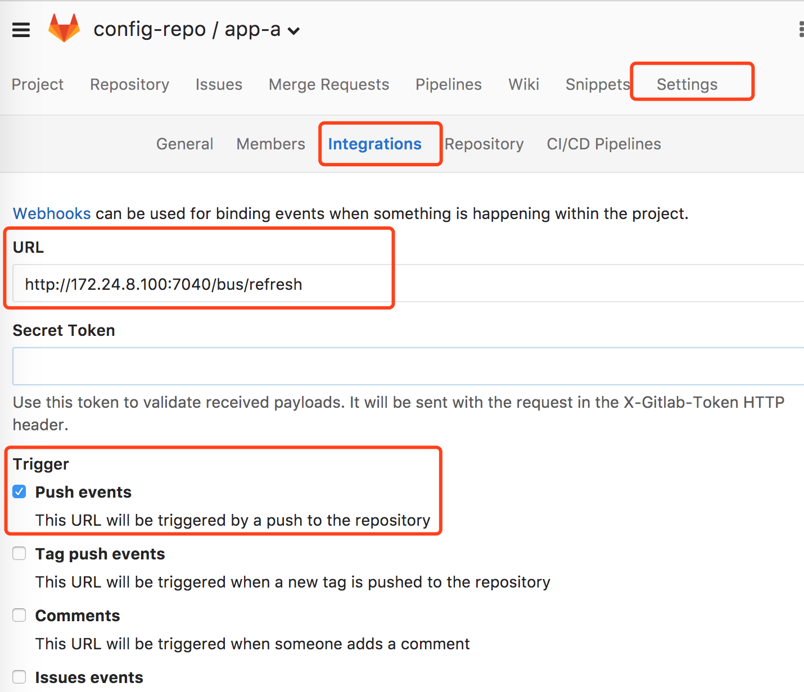
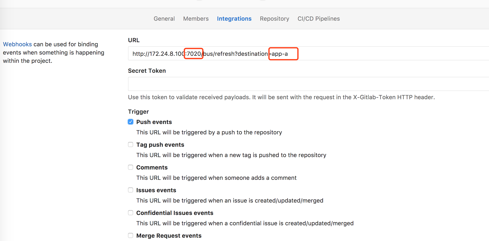

现在我们的配置中心使用 Spring Cloud Bus 与 Spring Cloud Config 的整合，并以 RabbitMQ 作为消息代理，实现了应用配置的动态更新。
架构如下图所示：

但是，现在的架构有个很大的缺陷，就是每次在修改配置文件后，需要手动地触发下应用的 /bus/refresh 接口，才能完成更新操作。假如我们后端有上百个不同的服务在运行的话，手动去更新简直就是灾难，更新某一个应用时，需要先查到他的 IP + 端口号。而且如果同时修改了很多服务的配置的话，一个一个去发更新请求就有些太痛苦了。
解决这个问题的办法是借助 GitLab 的 Webhook 机制，让 GitLab 帮我们去发这个请求。Webhook 用于当 GitLab 上的项目有变化的时侯以 HTTP 接口的形式通知第三方。
进入我们 GitLab 的 config-repo/app-a 仓库，在 Settings - Integrations 中可以对 Webhook 进行设置：URL 填写我们刷新配置的地址，触发器选择 Push events 就够了，然后直接保存。

现在可以测试一下，修改配置后，不需要再手动访问 /bus/refresh 也能完成更新操作了。
初步优化到这里就结束了，已经可以省去很多人力成本，简单来说就是服务的配置更新需要 GitLab 的 Webhook 通过向具体服务中的某个实例发送请求，再触发对整个服务集群的配置更新，不过这样做还是有问题的：首先一个问题是，我们在配每个服务 Webhook 的时候，其实也需要根据自己在线上不同的 IP + 端口号 来配置，另一个更严重一些的问题是，虽然我们现在的方式可以依赖消息总线，通过更新一个实例达到更新所有实例的目的，但这样做有个前提是，接受 /bus/refresh 的那个实例要保证没有宕掉，如果它挂了，配置依然不会被修改。比如我们的 app-a 服务有很多实例，我们分别取名叫 app-a-1,app-a-2,app-a-3…，现在我们在 Webhook 中设置的地址是 app-a-1 实例的 /bus/refresh 地址，假如在我们更新完 GitLab 上的配置文件后，app-a-1 那台机器刚好出了问题，这个时候其他的实例也就得不到更新了。
其实这个时候依赖哪个节点都不合适，谁也不知道哪个节点在什么时候会挂掉，可能有人会想到，我可以给所有节点都发一遍请求，我来分析一下这样做的缺点：
- 第一点是节点很多的时候，你需要配很多
Webhook - 第二点是当每个实例收到消息后，都会通过
RabbitMQ通知其他所有实例，这样做非常浪费资源而且消息总线的意义就不存在了 - 第三点是我们指定的实例会在收到更新请求的时候立刻更新配置，并通过异步的方式来通知其他实例，这时会导致我们节点间存在不对等性，从而增加集群内部的复杂度
- 第四如果我们需要对服务实例进行迁移，那么我们还要修改
Webhook中的配置
所以我们需要做一些调整，让服务集群中的各个节点是对等的：我们在 Config Server 中也引入 Spring Cloud Bus，将配置服务端也加入到消息总线中来。/bus/refresh 请求不再发送到具体实例上，而是发送给 Config Server，并通过 destination 参数来指定需要更新配置的服务或实例。
在 Config Server 项目的 build.gradle 中加入消息总线的依赖：
compile('org.springframework.cloud:spring-cloud-starter-bus-amqp')
然后修改 application.yml，加入
1 | management: |
然后在 app-a 的 GitLab 仓库中修改我们刚才设置的 Webhook，将地址改为：http://172.24.8.100:7020/bus/refresh?destination=app-a
注意端口号已经变了，对应的是配置中心的端口，destination 的值是要刷新的服务名称，这样的话配置其他服务 Webhook 的时候，只需要修改这个名称就可以了。

通过上面的改动，我们的服务实例就不需要再承担触发配置更新的职责。同时，对于Git的触发等配置都只需要针对 Config Server 即可，从而简化了集群上的一些维护工作。
保存 Webhook 后再次修改 GitLab 上 app-a 的配置文件，提交修改后刷新页面看到结果已经变为最新的配置了。